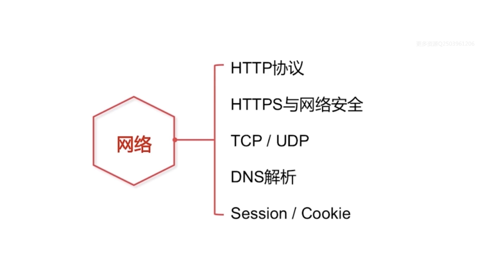
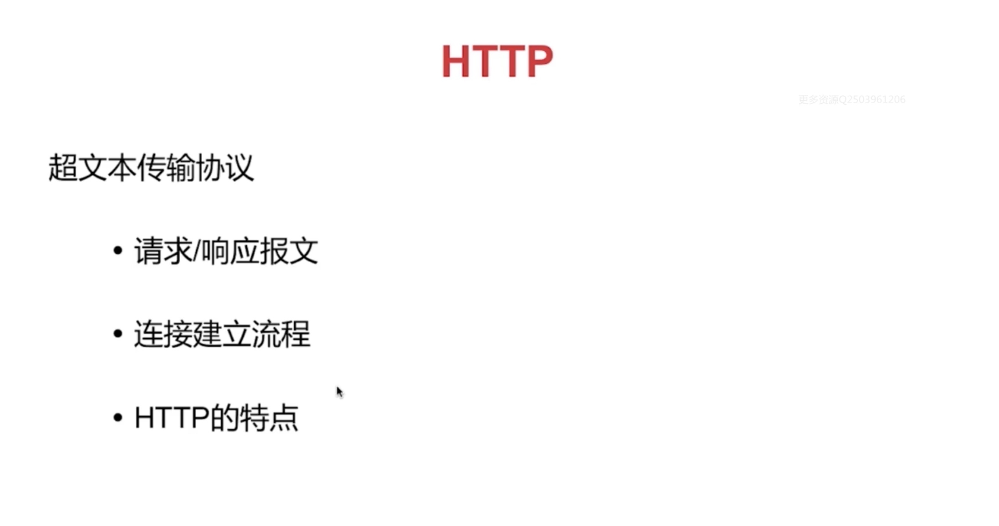
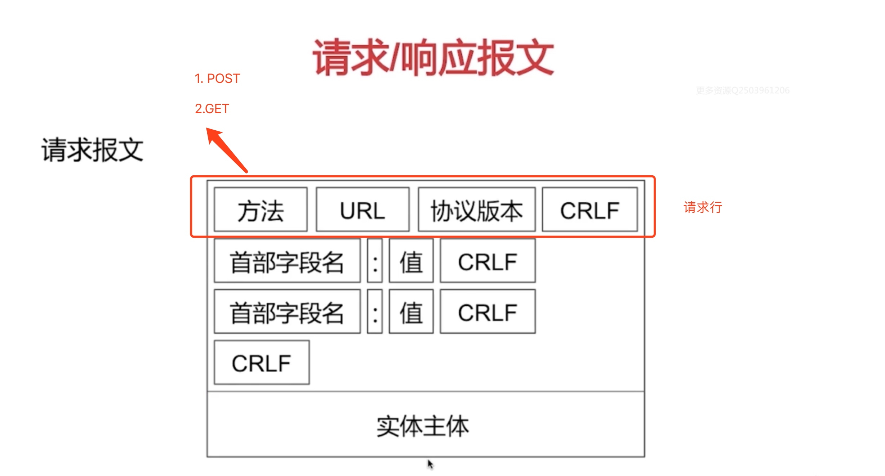
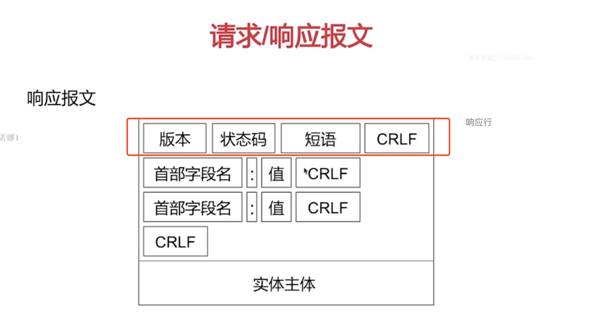
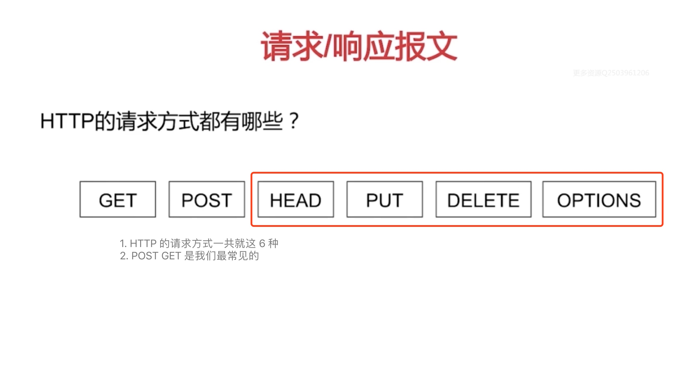
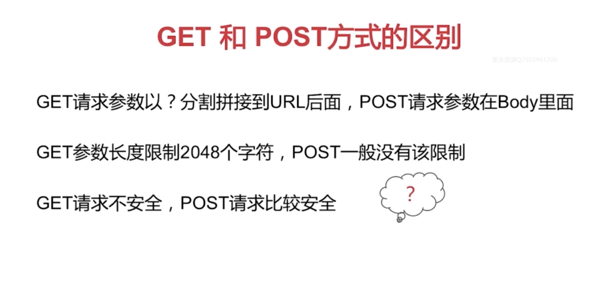
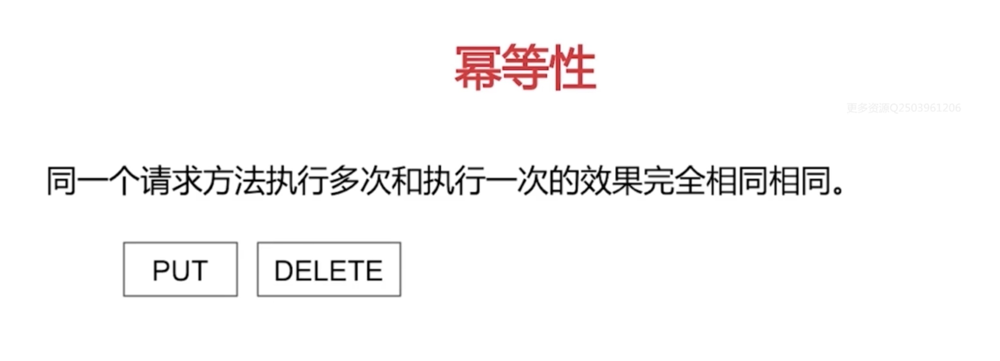
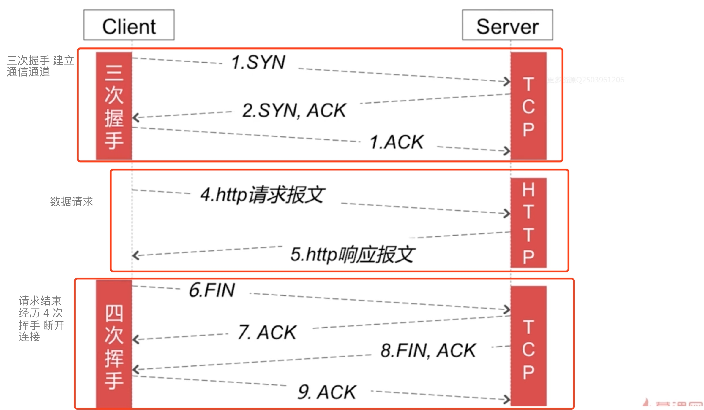
在浏览器发送HTTP请求之前，需要在浏览器和服务器之间建立一条TCP/IP连接。每一条TCP连接唯一地被通信两端的两个端点(即两个套接字)所确定，TCP连接的端点叫做套接字(socket)。根据RFC 793的定义，端口号拼接到IP地址即构成了套接字。而一次TCP连接主要分为建立连接(三次握手)，数据传输，断开连接(四次挥手)，下图给出了TCP的通信过程
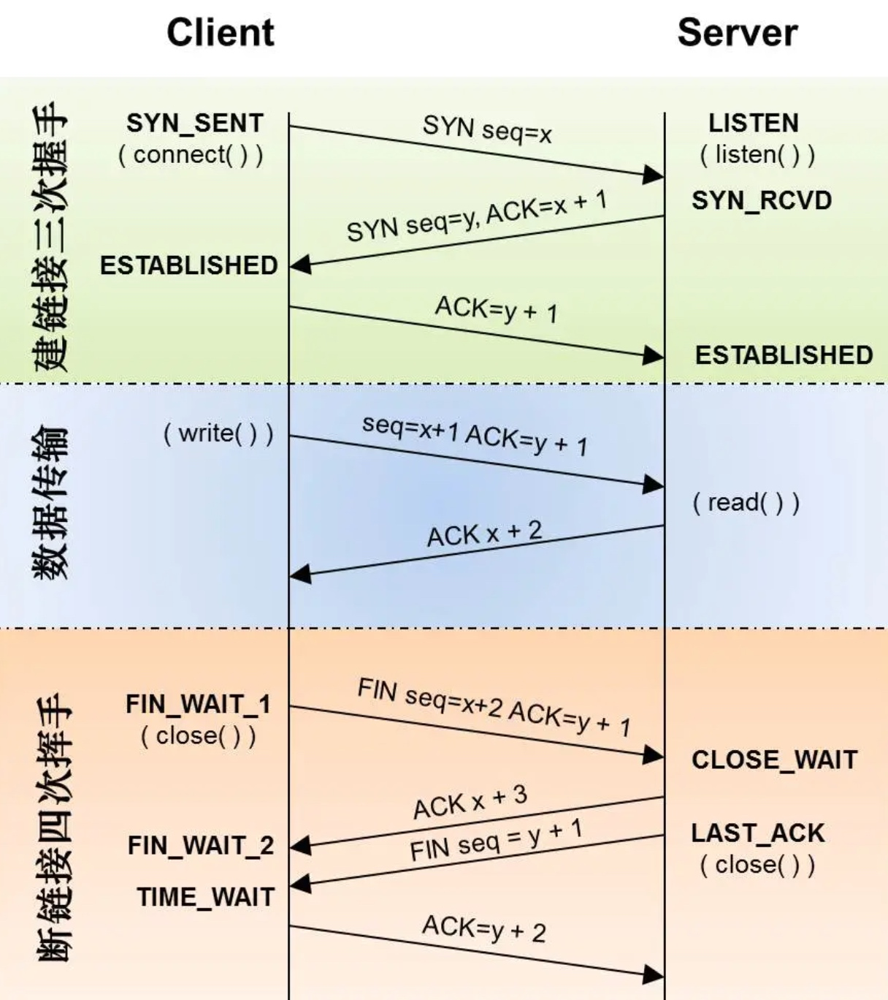
TCP报文段首部中的几个概念
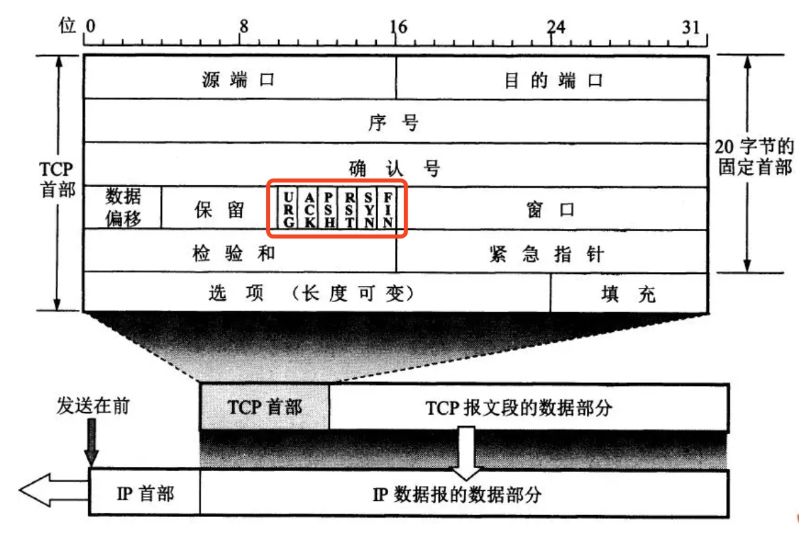
- 确认号
确认号是期望收到对方下一个报文段的第一个数据字节的序号。例如，B正确收到A发送过来的一个报文段，其序号字段值为501，而数据长度是200字节(序号501 ~ 700)，这表明B正确收到了A发送的到序号为 700 为止的数据。所以，B期望收到A的下一个数据序号是 701 ，于是B将确认号置为 701，表示为 ACK = 701。总之，**若确认号 = N，则表明 N - 1 为止的所有数据都已正确收到
- 确认 ACK
ACK标志位用于确认收到
- 同步 SYN
用来初始化一个连接的同步序列号，当建立一个新连接时，从客户机发送到服务器的第一个报文段的SYN位字段被启用。
- 终止 FIN
用来释放一个连接，当FIN = 1时，表明此报文段的发送方的数据已发送完毕，并要求释放运输连接。
- 序列号
TCP是面向字节流的，在一个TCP连接中传送的字节流中的每一个字节都按顺序编号，整个要传送的字节流的起始序号必须在连接建立时设置，这里的起始序号就是TCP三次握手过程中的初始序列号(Initial Sequence Number，ISN)。在《TCP/IP详解 卷1:协议》中谈到，在一个连接中，TCP报文段在经过网络路后可能会存在延迟抵达与排序混乱的情况，为了解决这一问题，需要仔细选择初始序列号，现代系统通常采用半随机的方法选择初始序列号，保证一定的安全性。
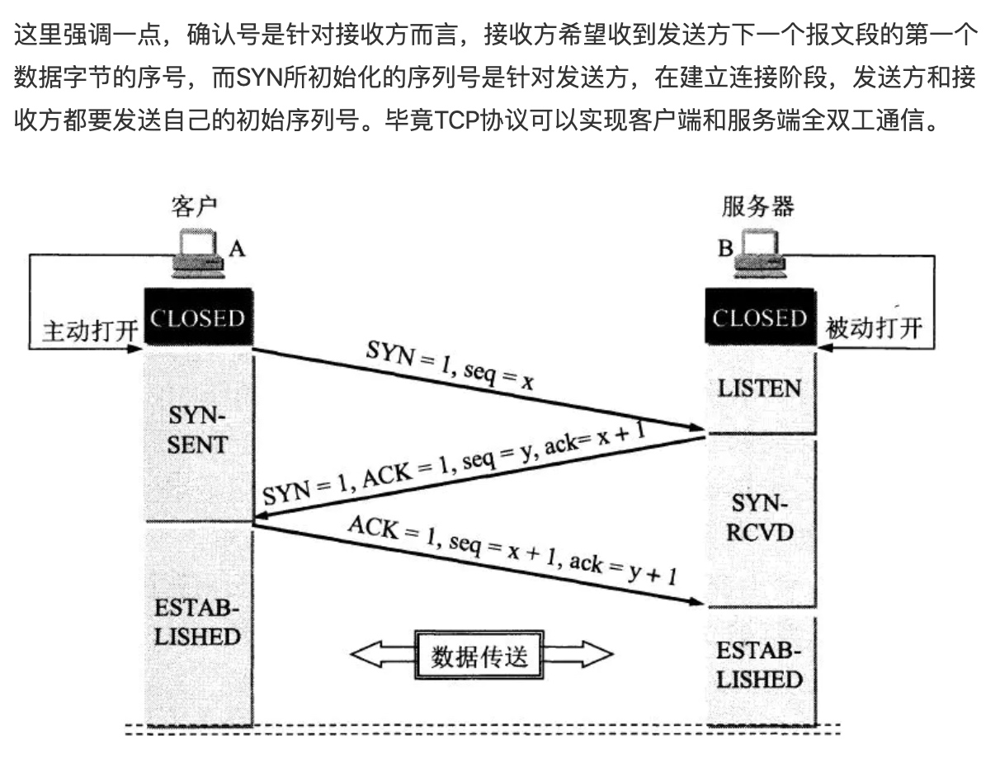
第一次握手
客户端在打算建立TCP连接时，向服务端发出 连接请求报文段(也就是SYN报文段，其SYN标志被置位) 设置首部中的同步位 SYN = 1 ,同时随机选择一个初始序号 seq = x。TCP规定，SYN 报文段(即 SYN = 1 的报文段) 不能携带数据，但要消耗掉一个序号，这时，TCP客户进程进入 SYN-SENT (同步已发送) 状态
第二次握手
服务器收到连接请求报文段后，如同意建立连接，则向客户端发送确认，在确认报文段（SYN+ACK段）中应把 SYN 位和 ACK 位都置1，确认号是 ack = x + 1，表示服务端希望从客户端这边接收数据的序列号。同时也为自己随机选择一个初始序号 seq = y。请注意，这个报文段也不能携带数据，但同样要消耗掉一个序号。这时 TCP 服务器进程进入 SYN-RCVD(同步收到)状态
第三次握手
客户端收到服务器发送的确认后，还要再次向服务端给出确认。确认报文段的ACK置1，确认号 ack = y + 1.而自己的序号 seq = x + 1,TCP的标准规定，ACK报文段可以携带数据，但如果不携带数据则不消息序号，在这种情况下，下一个数据报文段的序号仍是seq = x + 1。这是TCP连接已经建立，客户端进入ESTABLISHED(已建立连接)状态，服务端收到确认后，也进入 ESTABLISHED 状态。
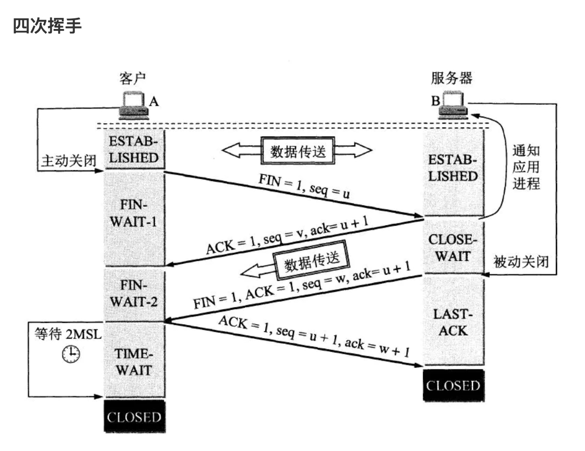
第一次挥手
客户端向服务端发出连接释放报文段(即FIN标志置为1的报文段)，并停止再发送数据，客户端把连接释放的报文段首部的终止控制位FIN置1，其序号为 seq = u ,它等于前面已传送过的数据的最后一个字节的序号加1.这时客户端进入FIN-WAIT-1 (终止等待 1)状态，等待 B 的确认，请注意，TCP 规定，FIN 报文段即使不携带数据，它也消耗掉一个序号。
第二次挥手
服务器端收到连接释放报文段后即发出确认，确认号是 ack = u + 1,而这个报文段自己的序号是 v ，等于服务端前面已传送过的数据的最后一个字节的序号加1.然后服务端进入CLOSE-WAIT(关闭等待)状态。这时的TCP连接处于 半关闭状态，即客户端已经没有数据要发送了，但服务端若发送数据，客户端仍要接收。服务端到客户端这个方向的连接并没有关闭，这个状态可能要持续一段时间。
客户端收到来自服务端的确认后，就进入 FIN-WAIT-2(终止等待 2) 状态，等待 服务端发出的连接释放报文段
第三次挥手
如果服务端已经没有向客户端发送的数据了，其应用进程就通知服务端释放连接。这时服务端发出的连接释放报文段必须使 FIN = 1。现假定服务端的序号为 w (在半关闭状态 B 可能又发送了一些数据)。服务端还必须重复上次已经发送过的确认号 ack = u + 1。这时 B 就进入 LAST-ACK (最后确认) 状态，等待 A 的确认。
第四次挥手
客户端收到服务端的连接释放报文后，必须对此发出确认。在确认报文段中把 ACK 置为 1，确认号 ack = w + 1。而自己的序号是 seq = u + 1 (根据TCP标准，前面已经发送过的 FIN 报文段要消耗一个序号)。然后进入TIME-WAIT(时间等待)状态。这时，TCP连接还没有释放掉，等待时间计数器设置的时间 2MSL后，客户端才进入到CLOSED状态
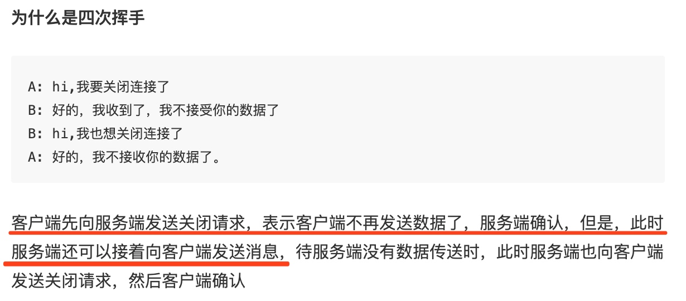
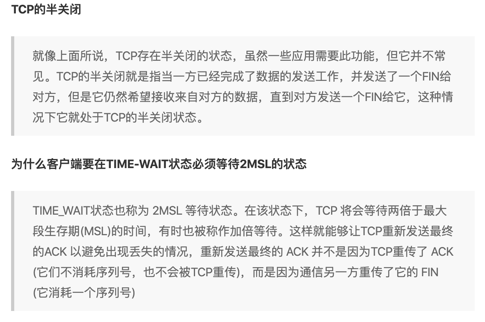
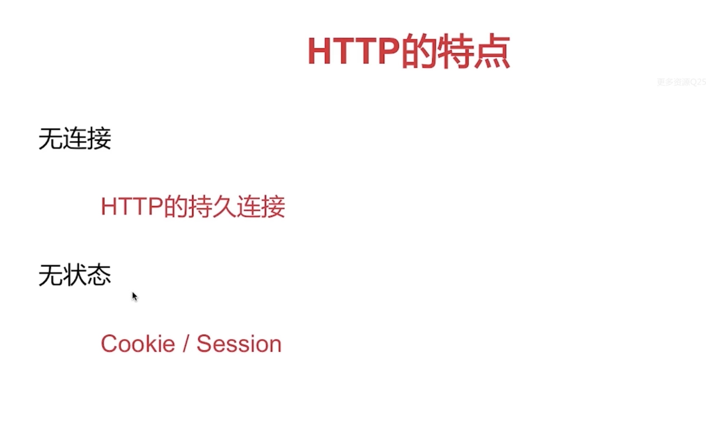
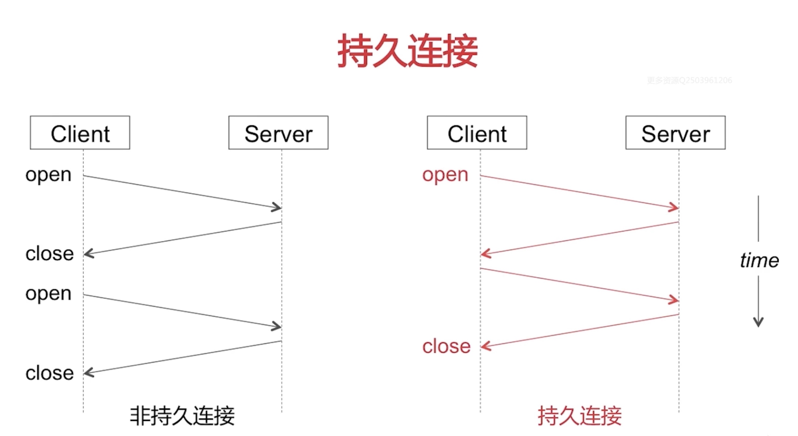

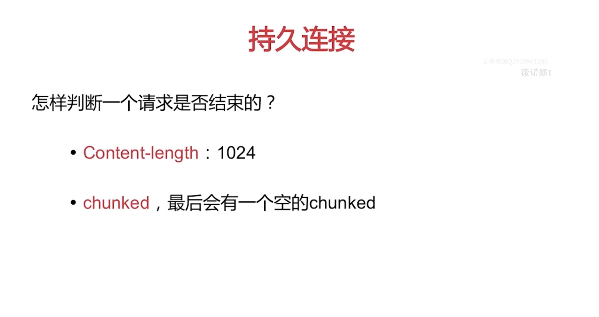
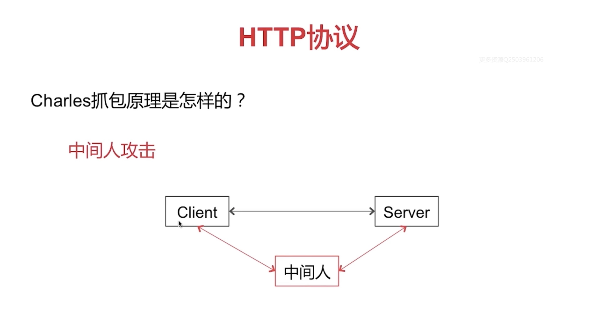

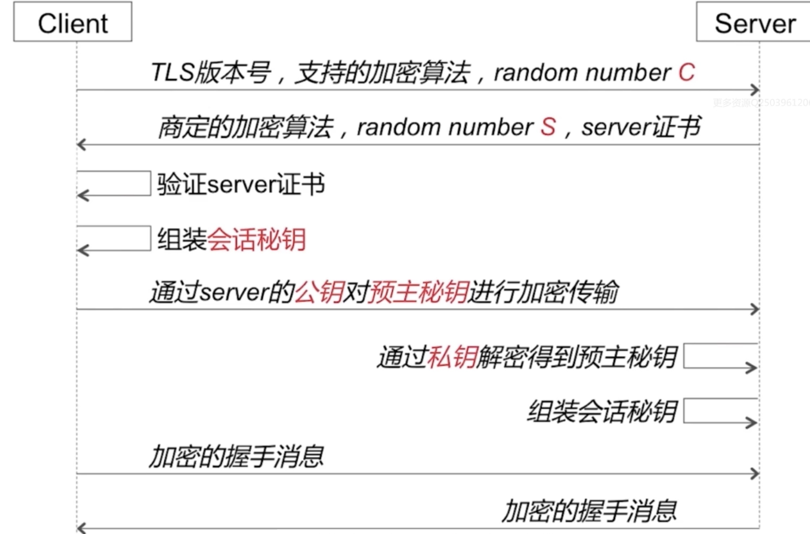
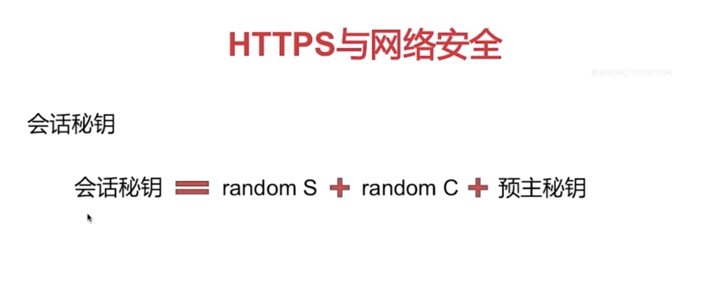
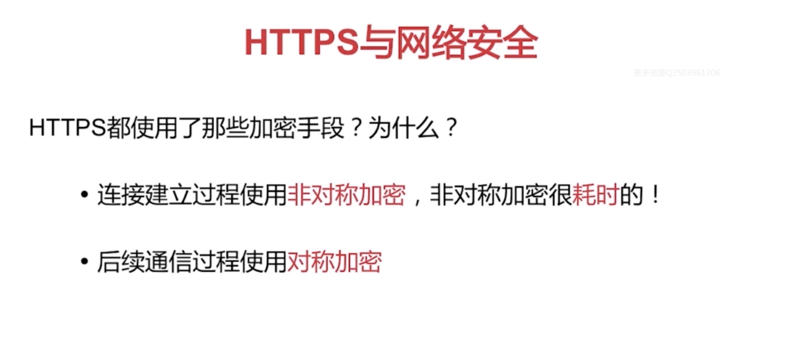
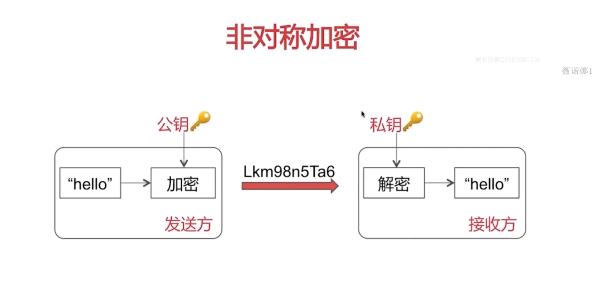